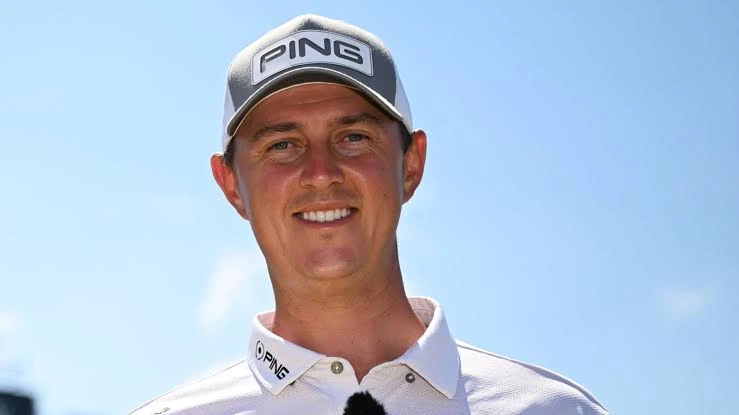

Former Morrisons delivery driver Joe Dean won the 12-man, last-chance qualifier for the 154th Open Championship at Royal Birkdale. With his fiancée carrying his bag just eight days before their wedding, Dean shot a 2-under 68, highlighted by an eagle on the 14th, to secure the final spot in the field.

Joe Dean used to drive a Morrisons van to help pay for his golf. On Monday morning he stood on the 18th green at Royal Birkdale, his fiancée carrying his bag, and rolled in a par putt to claim the final place in the 154th Open Championship.
Eight days before his wedding. In front of the grandstands. One shot clear of the field.
What Is the Last-Chance Qualifier?
It's brand new, and Monday was its first ever staging. The R&A set it up so the final spot in the Open field gets decided in a one-day shootout at the host course itself, three days before the championship starts. Twelve players, 18 holes, one place. Winner takes all.
Every other spot was already gone. 155 of the 156 players in the field were locked in. Dean and 11 others turned up at Birkdale on Monday morning knowing that one of them was going to play The Open and the other eleven were going home.
How Did Joe Dean Win It?
With a 2-under 68 and one enormous 6-iron. The 32-year-old from Sheffield made an eagle at the par-5 14th that pushed him to 3-under and gave him the lead. He blasted a drive down the fairway, then hit his approach from 250 yards to three feet.
His own verdict on the shot was refreshingly blunt. He said it was probably the best 6-iron he's ever hit, and that the wind grabbed it and the bounce went his way. Then came the wobble. He flew the green on the par-3 15th, failed to get up and down from 40 yards, and made bogey. Lead cut to one. He parred the last three holes to hold on, finishing one clear of fellow Englishman Andrew Wilson and two clear of South Africa's Aldrich Potgieter.
Who Is Joe Dean?
A DP World Tour pro who has done this the hard way. Dean once picked up delivery driver shifts at Morrisons supermarket to help cover the costs of chasing a golf career. Anyone who has ever tried to fund tournament golf without a rich backer knows exactly what that means. Entry fees, travel, hotels, and a lot of weeks where the cheque doesn't come.
This will be his third Open. He tied for 70th at Birkdale in 2017, the last time it hosted, then tied for 25th at Troon in 2024. Both times he made the cut, which is more than plenty of bigger names can say. He also knows himself as a player. He said one-day events seem to suit him, something about keeping the same mentality throughout, though he admitted he doesn't fully know why.
What's the Story With His Fiancée on the Bag?
She caddied for him. Emily, Dean's long-time partner, carried his bag around Birkdale on Monday and was standing beside him when he holed the putt that got him in.
They are getting married on July 21, eight days after he qualified and two days after The Open finishes. When someone asked why they picked that date, Dean's answer was perfect. He said it was cheaper. That's a man who has spent his career counting the pennies, and it tells you everything about how he got here.
What Happens Now?
He tees off Thursday morning at Birkdale alongside Henrik Stenson and Max Homa, out in game four at 7:08am. A former Champion Golfer of the Year and a PGA Tour winner, and Joe Dean from Sheffield in between them.
There's a footnote worth watching too. Andrew Wilson, who finished one shot behind, is first alternate, and Sam Burns is expected to withdraw for the birth of his second child. So Wilson's near-miss might not be a miss at all. Three other players, Johnny Keefer, Michael Thorbjornsen and Victor Perez, also snuck in through their finishes at the Scottish Open on Sunday. The last few places in this field went right to the wire.
The Raw Read
This is the best story of Open week and the championship hasn't even started. Golf spends a lot of time celebrating the millionaires at the top, and then every so often it produces something like this. A bloke who drove a supermarket van to fund his golf, playing his way into a major on the very course where he first appeared as a nobody nine years ago, with the woman he marries next week carrying his clubs.
He probably won't lift the Claret Jug. Let's be honest about that. But he has made the cut in both his previous Opens, he knows Birkdale, and he clearly plays well when everything is on one round. Whatever he shoots on Thursday, he has already won the week. Every golfer grinding away with a day job and a dream should watch this one, because Joe Dean just showed you it can still be done.
Frequently Asked Questions
Who won the Open Last-Chance Qualifier?
Joe Dean of England, who shot a 2-under 68 at Royal Birkdale to claim the final spot in the 154th Open Championship.
What is the Last-Chance Qualifier?
A new event staged for the first time in 2026. Twelve players compete over 18 holes at the host course three days before The Open, with the winner taking the final place in the 156-man field.
How did Dean win it?
He made an eagle on the par-5 14th after hitting a 6-iron from 250 yards to three feet, then parred the last three holes to win by one shot from Andrew Wilson.
Who caddied for Joe Dean?
His fiancée Emily. The couple are getting married on July 21, eight days after he qualified.
Has Joe Dean played The Open before?
Yes, twice, and he made the cut both times. He tied for 70th at Royal Birkdale in 2017 and tied for 25th at Royal Troon in 2024.
Who does Dean play with in Round 1?
He tees off at 7:08am Thursday alongside 2016 Champion Golfer Henrik Stenson and American Max Homa.